Durable transfers
Uploads and downloads survive app restarts, pause and resume on demand, and back off politely when Telegram rate-limits.
Open source · Local first · Android 12–16
Shelf Drive turns your Saved Messages and private channels into a real file workspace — folders, search, streaming, transfers and optional encryption — running entirely on your device.
Checking GitHub… Signed sideload build · verified update manifest
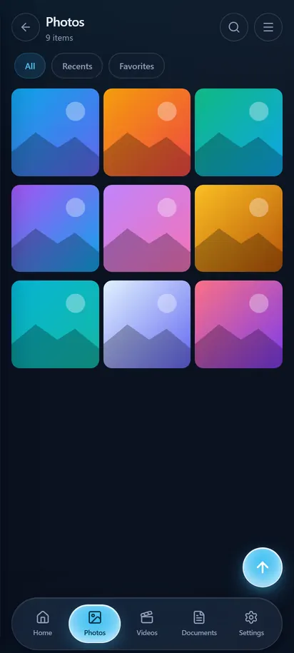
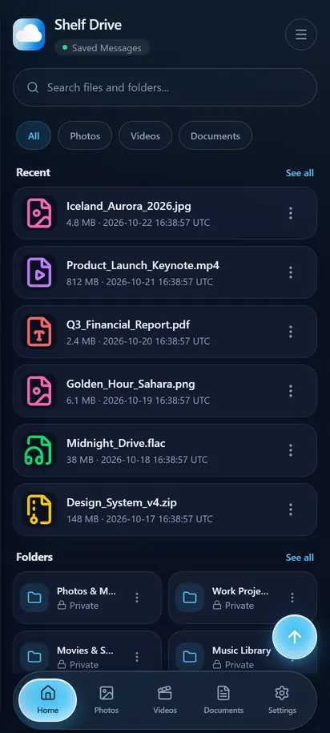
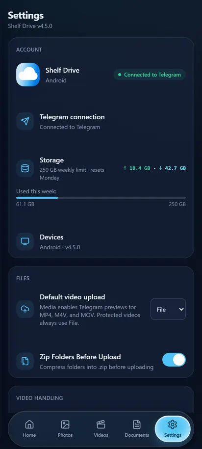
Files stay in Saved Messages and your private channels. There is no Shelf Drive storage account.
No relay servers between you and Telegram. Metadata lives in a local SQLite database.
Open source end to end — folders, sync, sharing, encryption and updates, with no paid tier.
Product
The core is a file manager that feels native on a phone: five tabs, a frosted drawer, and a floating upload button that never gets in the way.
01 / Organize
Grid and list views, multi-select with bulk actions, pinned and favourite shelves, and a drawer that mirrors the desktop sidebar — Library, Organize, Storage Insights, Groups and your channels.
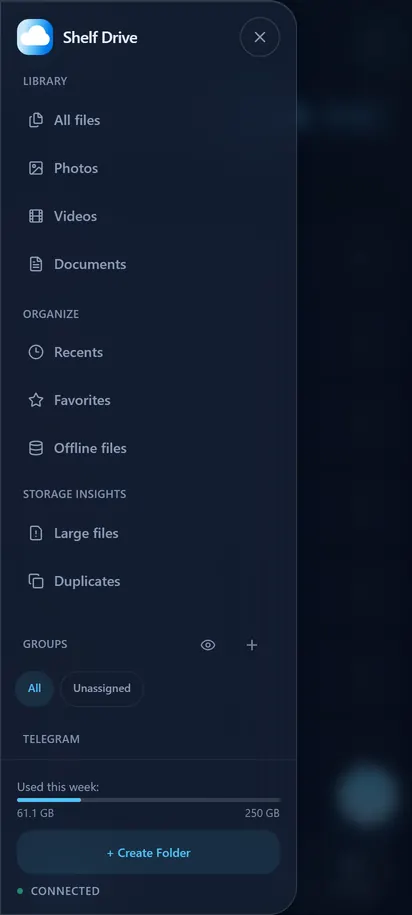
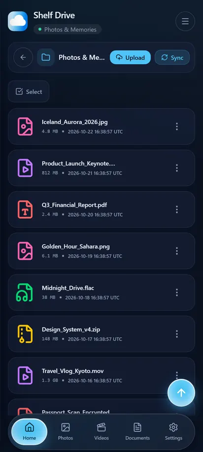
02 / Upload
One sheet covers files, photo backups, videos, whole folders and the Android document picker. Transfers run in durable queues that survive restarts, with pause, resume, retry and bandwidth limits.
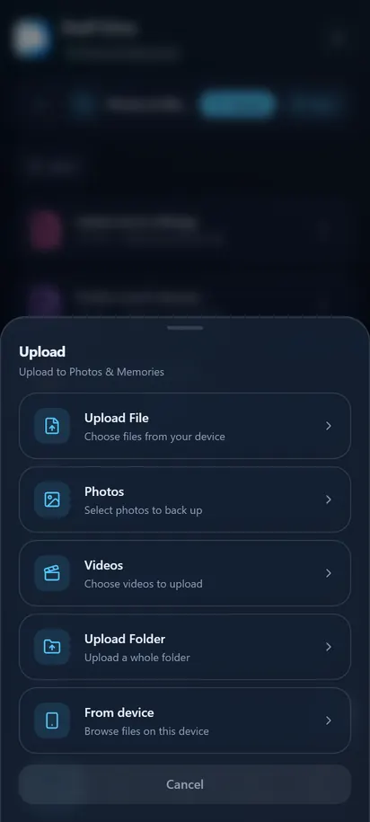
03 / Preview
Images, video, audio and PDFs open inside the app. Photo and video tabs collect everything across folders, while offline packs keep a trip's worth of files on the device.
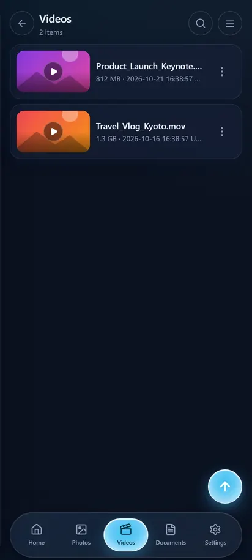
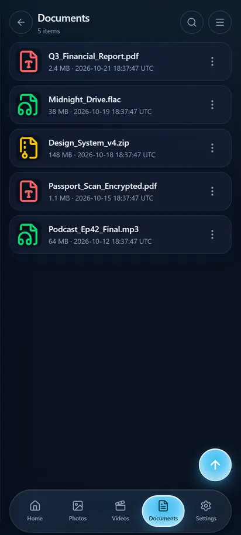
04 / Personalize
System, light and dark modes follow your phone, and every built-in palette enforces a WCAG 4.5:1 contrast floor. RTL layouts are supported where the language needs them.
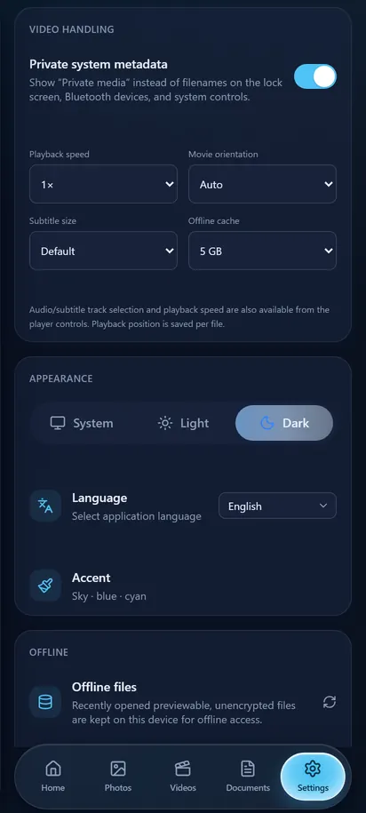
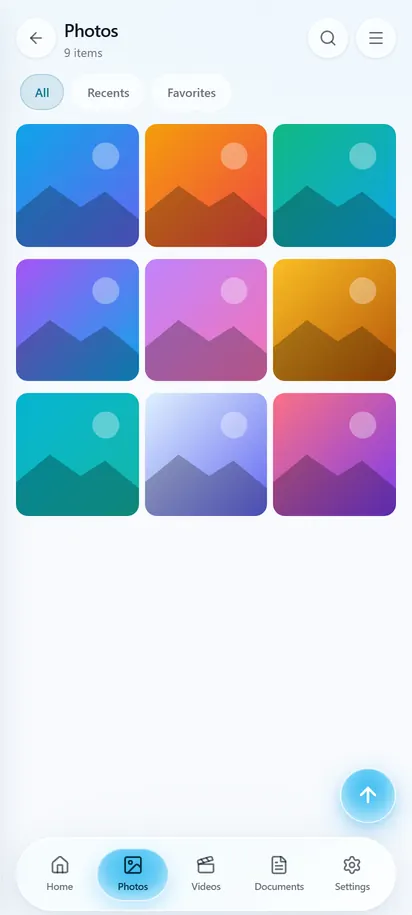
Uploads and downloads survive app restarts, pause and resume on demand, and back off politely when Telegram rate-limits.
Share Telegram message links, or generate password-protected download links with QR codes for people on your network.
TDENC2 envelope encryption adds a vault passphrase on top of Telegram's transport encryption, with recovery bundles you export.
Keep the files that matter on the device. Offline copies stay browsable and playable without a connection.
Spatial navigation and remote-control focus handling for Android TV and Google TV, with a layout that scales to the couch.
The sideload updater verifies a minisign signature and the APK's SHA-256 digest before handing anything to Android's installer.
Screens
Dark and light, onboarding and vault — these are real renders of the mobile shell, not mockups.
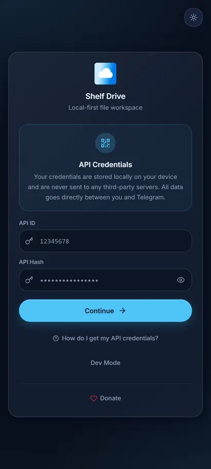
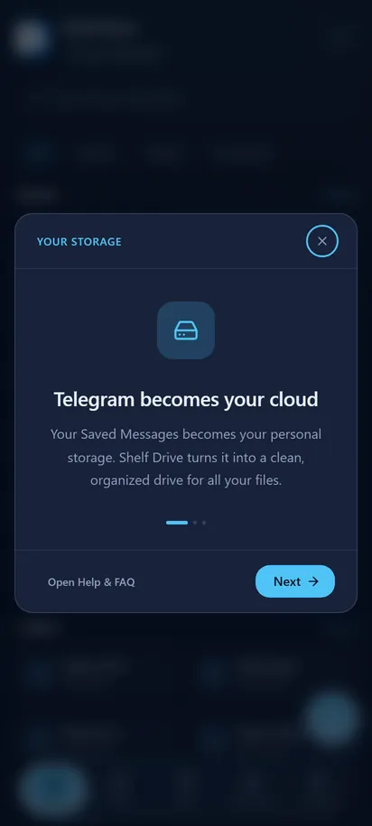
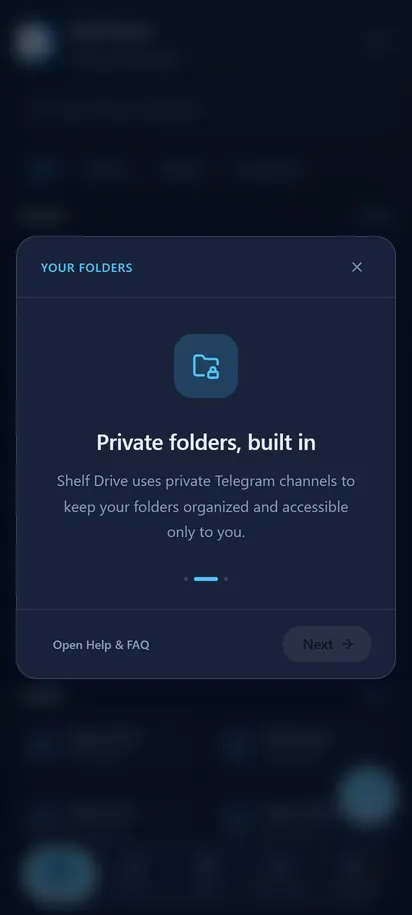
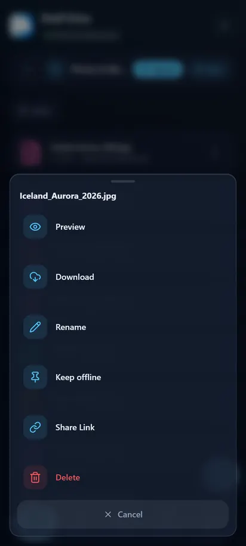
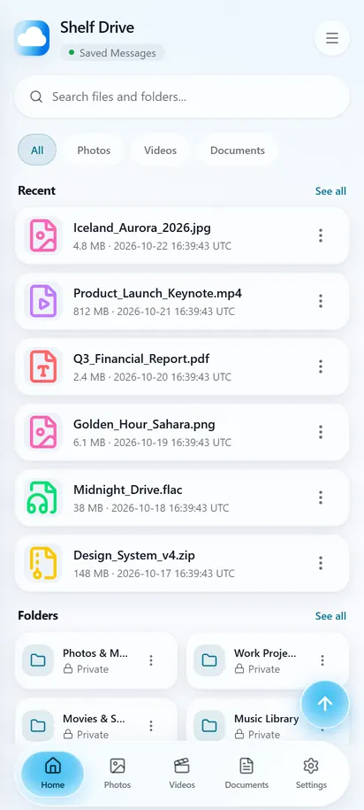
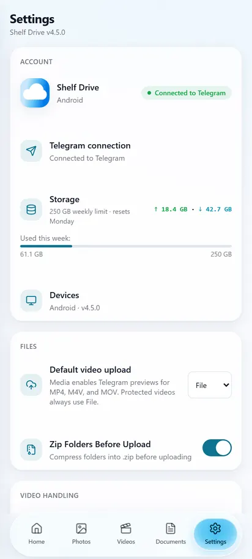
Trust model
Shelf Drive operates no file relay and no hosted file database. Transfers happen between the app on your phone and Telegram's servers over MTProto.
Your Telegram API ID and hash live in the Android Keystore-backed secure store. They are never uploaded to a Shelf Drive service.
Files travel directly between the app and Telegram. Crash reporting is opt-in only, behind a consent dialog on first launch.
TDENC2 vault encryption is optional. Recovery is your responsibility, so export and store the recovery bundle somewhere safe.
The in-app updater checks a minisign-signed manifest with a public key embedded in the app, then the APK's SHA-256 digest.
Read the privacy policy and security policy for the full detail.
Android & Google TV
The same signed APK installs on phones, tablets, Android TV and Google TV. Spatial navigation maps the remote's directional pad onto the frosted interface, so focus never gets lost.
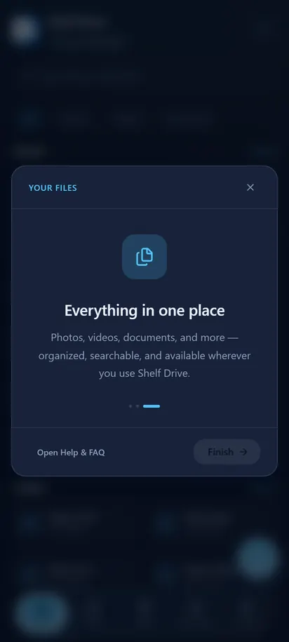
Download
Shelf Drive for Android is distributed as a signed APK — sideloaded, not through Google Play. Every release is built and signed in CI.
Android 12–16 · universal APK
Open the latest release → TelevisionSame APK · remote-control navigation
Open the latest release → VerificationCertificate fingerprint and manual steps
Read the runbook → HistoryVersion history and changelogs
Browse releases →Open my.telegram.org, choose API development tools and copy your API ID and hash.
Sideload the APK, paste the credentials once, then confirm the login code for your Telegram account.
Saved Messages becomes the home location. Existing and new private channels appear as folders.
Questions
In your own Telegram account. Saved Messages acts as the home location and private channels act as folders. Shelf Drive does not operate a separate file-storage service.
Storage follows Telegram's account, service and per-file limits. Shelf Drive does not add a storage quota of its own, and encrypted files carry a small envelope overhead.
No. Releases are signed APKs distributed through GitHub Releases. You install them by allowing installs from your browser or file manager.
On launch the app fetches a minisign-signed update manifest from this repository's releases, verifies the signature against a key embedded in the app, checks the APK digest, then hands the verified file to Android's installer.
Yes. The same APK installs on Android TV and Google TV, where spatial navigation maps the remote's directional pad onto the interface.
Not yet. iOS is not production-ready and no iOS builds are published. The shared core is gated for it, but there is no signing pipeline or tested device build.
No. It is an independent open-source project that talks to Telegram's client API using credentials you create yourself.
Free, open source, and built for the phone in your hand.